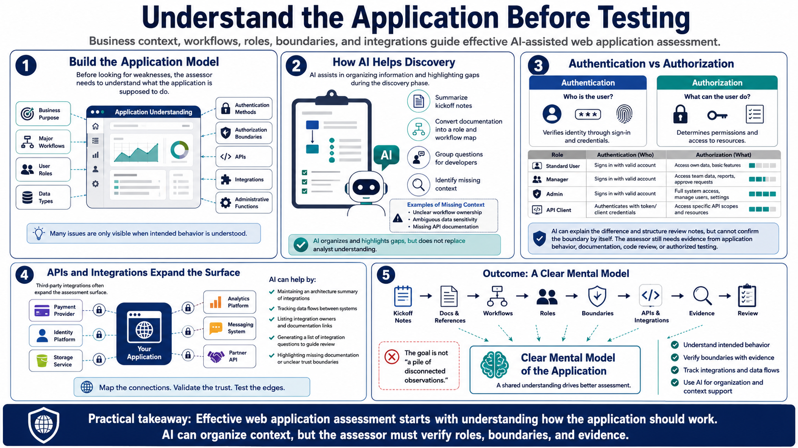

Understanding the Application
Connecting to LMS... Progress: in progress

Narration
Before looking for weaknesses, the assessor needs to understand what the application is supposed to do. That includes the business purpose, major workflows, user roles, data types, authentication methods, authorization boundaries, APIs, integrations, and administrative functions. Many web application issues are visible only when the tester understands how the application is intended to behave.
AI can help organize this discovery phase. It can summarize notes from kickoff meetings, turn application documentation into a role and workflow map, or group questions for developers. It can also help identify places where the assessor lacks enough context, such as unclear ownership of a workflow, ambiguous data sensitivity, or missing API documentation.
Authentication and authorization deserve careful attention. Authentication answers who the user is. Authorization answers what that user is allowed to do. AI can explain the difference and help structure review notes, but it cannot confirm the boundary by itself. The assessor still needs evidence from application behavior, documentation, code review, or authorized testing.
Third-party integrations and APIs often expand the assessment surface. Payment providers, identity platforms, storage services, analytics tools, messaging systems, and partner APIs may all affect security. AI can help maintain an architecture summary and a list of integration questions. The outcome should be a clear mental model of the application, not a pile of disconnected observations.